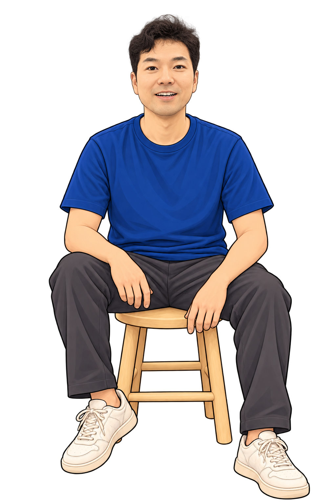

Hi, I'm Aloong.
把好奇心变成作品，
记录技术、创造和生活里的小发现。
本站累计访客 1,024 人

把好奇心变成作品，
记录技术、创造和生活里的小发现。
本站累计访客 1,024 人
App: posts are set by the published posts; the homepage shows the newest 4. A menu opens while the pointer rests on its tab or the tab has keyboard focus. No such controls.